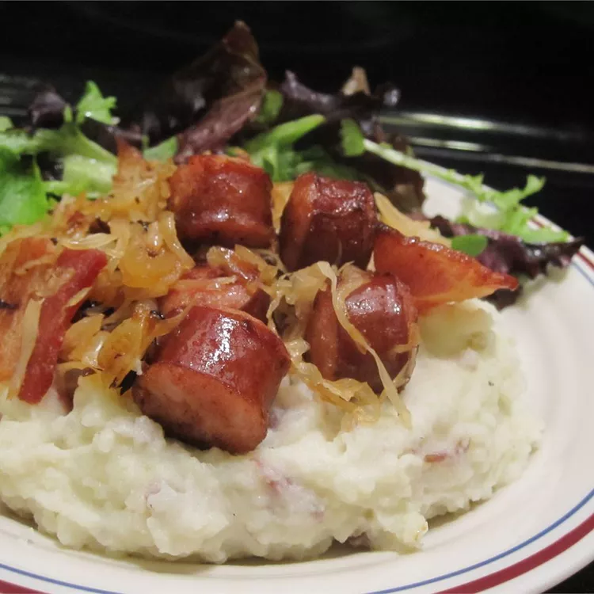

Sauerkraut and Sausage

Cooked sauerkraut mixed with chopped sausage.
Ingredients:
- 2 lb sauerkraut, rinsed and drained
- 0.25 cup brown sugar
- 1 apple, diced
- 1 tbsp olive oil
- 0.25 lb bacon, cut into 1-inch pieces
- 1 large onion, chopped
- 1.5 lb kielbasa sausage, cut into 1-inch thick slices
Directions:
- Place sauerkraut, brown sugar, and apple into a large saucepan over medium-low heat, and bring to a simmer.
Reduce heat to low, and cook for 2 hours, stirring occasionally.
- Preheat the oven to 325 degrees F (165 degrees C). Grease a 9x13-inch baking dish.
- Place bacon and onion into a skillet over medium heat, and cook until bacon is almost crisp and onion is beginning to brown, about 10 minutes.
Stir the bacon mixture into the sauerkraut.
- Brown kielbasa sausage in remaining bacon grease in the same skillet until sausage begins to brown, 10 to 15 minutes;
stir into the sauerkraut mixture.
- Spoon the sauerkraut and sausage mixture into the prepared baking dish.
- Bake in the preheated oven until bubbling, about 1 hour.